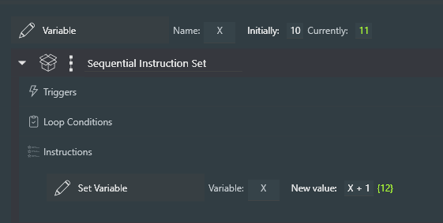
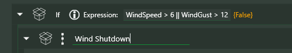
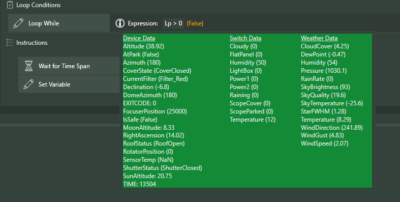
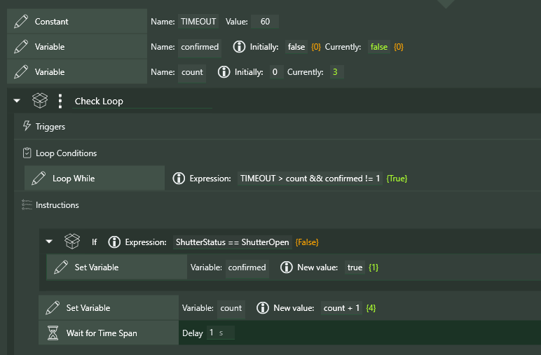
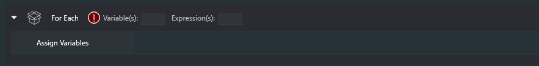
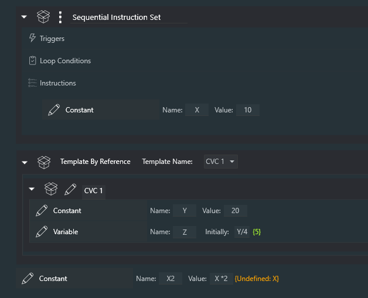
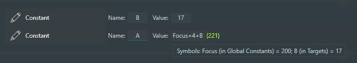

Constants/Variables/Expressions
Expressions
An Expression in Sequencer Powerups is pretty much any kind of mathematical expression using numbers (fixed or floating point), Constants, and Variables, plus Device Data (various data from your devices); currently supported Device Data values are documented below. Note that Device Data values are only available if the appropriate gear is connected!
Expressions can be used in "enhanced" instructions (enhanced in the sense that they accept Expressions in place of numbers), as well as some new instructions like If and Loop While. Enhanced instructions are named with "+" appended to the instruction name (e.g. Take Exposure +, Cool Camera +, etc).
So, for example, in Take Exposure +, the value of Exposure Time might be 10 or ExpTime (assuming ExpTime is defined as a Constant or Variable; see below) or even ExpTime / 3 or a conditional like if (rgb, ExpTime, ExpTime*2/3). In the latter case, the "if" predicate takes three arguments: something can be tested for true/false (1/0), a value if "true", and a value if "false".
What's Valid in an Expression
Valid tokens in Expressions include numbers, parentheses, function and operator names (see Appendix), Constant and Variable names, the names of gauges, switches, and other Device Data (if these devices are connected in NINA), and the reserved names TIME, SAFE, and EXITCODE (see ReservedVariables).
Constants
A Constant in Powerups is created using the Constant instruction; enter a name for the Constant and a value, which can be any valid expression (if the value refers to another Constant, that Constant needs to have been defined in the same instruction set or in a parent of the instruction set). The Constant instruction is self-executing and continuously re-evaluated! This means that Constants are "live" as they are read into the sequencer, and their values update as required, based on changes to other Constants that might have been referred to. When the Sequencer executes a Constant instruction, literally nothing happens! Note: A Constant definition cannot reference Variables and Device Data, as these - pretty much by definition - can change at any time!
The value of a Constant can be changed at any time (even when a Sequence is running) and all references to that Constant are updated semi-immediately (within a couple seconds). It's not a very good constant, is it?

Note that the calculated value of an Expression is shown in braces next to the Expression defining it. The value is shown in green if valid, and orange if not. Note that Constant (and Variable) names are case sensitive.
Constants have block scope, which means that a Constant has a value in the instruction set that includes it, as well as instruction sets "below" it in the hierarchy of instructions (i.e. nested within the "block" of instructions in which it appears). If a Constant X is defined in one instruction set, and a Constant X is also defined in a "lower" instruction set, the closest definition of X is used when that Constant is referenced. Many computer languages use block scope for variables. Below, the Take Exposure + instruction takes exposure time from the definition of A inside the same instruction set.
Global Constants are Constants that are valid everywhere in a sequence; they are set up in the Sequencer Powerups plugin page. They are described in more detail elsewhere in this document.
Variables
A Variable in Powerups is more similar to a traditional computer language variable; it also uses "block scope" (except for Global Variables; see below). A Variable is defined using the Variable instruction, which is entirely analogous to the Constant instruction, except that Variable definitions are not self-executing - the Variable does not have a value prior to the execution of the Variable instruction. References to a Variable "below" it in the code will show Not evaluated: <varname> until the Variable instruction gets executed.
The Set Variable instruction can be used to change the value of a previously defined Variable. For a value, any Expression can be used - including the use of Constants and Variables that have been previously defined. The simplest form of this might this:

Just as in a procedural computer language, if you are looping through an instruction set, any Variables defined in that instruction set are reset to having no value before the loop repeats!
Note: During sequence execution, the value of a Variable can be changed by editing the "Currently" field in the instruction. If the sequence is also modifying the Variable, the results are unpredictable
Variable Instructions
Variable : Creates and defines the initial value of a Variable when it is executed. Variables can have values that are either numbers or strings; strings must be enclosed in quotation marks (e.g. 'Value')
Set Variable : Redefines the value of a previously created Variable
Set Variable to Date : Redefines the value of a previously created Variable to a date and time, using the same mechanism as the built-in Loop Until Time interface (i.e. clock time, and time offset from meridian and the various forms of sunrise and sunset). Note: Internally, dates are represented by an integer, the number of seconds from midnight January 1, 1970 UTC
Global Variable : Creates and defines a Variable that can be used anywhere in a sequence, once the instruction has been executed. Global Variables are the only variables that can be used across sequencer sections (where a section is one of "Start Area", "Target Area", and "End Area"). The value of a Global Variable can be changed with either of the two instructions above (Set Variable and Set Variable to Date).
Embedded Instructions
Many Powerups include what I call Embedded Instructions; these are NINA instructions that are embedded within the Powerups instruction, in much the same way that instructions are embedded in NINA's instruction sets. A typical example is the If instruction (documented just below). When an If is dragged into a sequence, it looks like this:

To add Embedded Instructions, you simply drag them into the space marked "Conditional instructions go here", as below. In the following example, the two embedded instructions will be executed when WindGust is greater than 5.

To save screen real estate, Embedded Instructions can be hidden with the arrow at the upper left of the instruction.
Captured Instructions
Another concept Powerups uses is the idea of a Captured Instruction. Instructions that use this concept work on another NINA instruction, executing it and (usually) acting on the result. Here's one...
The If Failed instruction, for example, executes its Embedded Instructions if the execution of the Captured Instruction fails. Here I am dragging a Run Autofocus instruction into the If Failed.

And here's how it looks with the Run Autofocus as the Captured Instruction, and with a Send to Pushover instruction added as an Embedded Instruction. If the Run Autofocus fails, the message will be sent by Pushover...

If, If/Then/Else (instructions), When (trigger), Loop While (condition), Wait Until (instruction) and For Each (instruction)
If and If/Then/Else
The If instruction evaluates the given Expression and runs the specified instructions if that Expression is not false (not 0 or "false"). The If/Then/Else instruction adds the ability to specify instructions to execute if the Expression is false (or 0).

When
The When trigger is activated when the given expression is not false (not 0 or "false') and runs the specified instructions. There is a Once Only toggle in this instruction; setting this to ON will cause this trigger to run only once during execution of your sequence. There is also a Interrupt toggle; if set to 'ON' (the default), the When trigger will interrupt any instruction in progress (the check is performed approximately every 5 seconds).
The Interrupt functionality of the When trigger is unlike traditional NINA triggers that only run between the execution of instructions!
Warnings for the When Trigger
If you don't somehow arrange for the Expression to become false during the execution of the included instructions, the When trigger will run every five seconds (after finishing those instructions). If you want to keep this from happening, set the Once Only toggle to ON!

Loop While
Loop While is a standard NINA "Conditional" and gets placed with other conditionals in an instruction set. When queried (every 5 seconds or so while a sequence is running), it evaluates the given Expression and terminates the loop if the result is "false" or 0.
Here’s an example of a very simple instruction set using Variable, Set Variable, and Loop While. Note that the Variable instruction needs to be outside the loop; otherwise the Lp variable will be reset to 10 every time the loop is restarted!
Note the white "i" (for "Information") icon in the Loop While instruction. Hovering over this icon will show all of the Device Data that can be used in the Expression (this appears everywhere an Expression can be used). Here's what this might look like for you, depending on what devices you have connected at the time:

Here's an interesting example that uses these instructions to implement a timeout. The Loop While is basically running for up to 60 seconds OR until the confirmed Variable becomes true. Each time through the loop, the If instruction checks whether a switch (in this case, GuideScopeOpen) has become "true"; if so, the Set Variable instruction sets confirmed to true. This ends the loop.

Presumably, when this loop finishes, another test of GuideScopeOpen will be used to determine whether the opening procedure has succeeded. If not, perhaps a Ground Station plugin message will be sent, or the sequence terminated.
Wait Until
Wait Until is complementary to Loop While. The instruction will wait until the given Expression is "true" (no longer "false" or 0).
Here’s an example of a very simple instruction set using Variable, Set Variable, and Loop While. Note that the Variable instruction needs to be outside the loop; otherwise the Lp variable will be reset to 10 every time the loop is restarted!
For Each
The For Each instruction allows for the creation of loops through lists of Expression values; the current implementation seems to work properly, though the UI is somewhat constrained. When you load a For Each instruction into the sequencer, and open the container, you'll see this:

The Assign Variables instruction is created automatically, and should be left where it is - at the top of the instructions inside For Each.
In a For Each instruction, you can specify a Variable to use, and then a series of values for that Variable; each, in turn, is assigned to the Variable on each iteration of the loop. In the screenshot, the Variable ExpTime is set, in turn, to 30, 60, 120, 180, 240, and 300.
`
Note: You must define the Variable before the For Each instruction, as shown below
Note: Expressions can be used for values; however, at the moment, the current value of the Expression is not shown in the UI
Note: The "progress" indicator the screenshot below shows "0/6", indicating that there are six iterations of the loop to be executed.
It's possible to assign any number of Variables in each iteration of the loop. The syntax (see the screenshot below) is that Variable names are separated by a comma, and that sets of assigned values are separated by a semicolon. In the example below, the Variables ExpTime and Gain are set each time through the loop first to 30 and 0, respectively, then to 60 and 0, then to 120 and 100, etc.
For Each instructions can be nested (of course). The sequence below will image 20 darks at 8 different exposure times and 2 different gains.
Constant/Variable Container
A Constant/Variable Container is a special kind of container that can hold only Constant, Variable, and Annotation instructions. Its intended use is to "clean up" sequences with many Constant and Variable definitions. What makes this container special is that Constants and Variables defined within it act as though they were defined at the level of the container (or Template by Reference) that they are enclosed in.
In the example below, the Constant X2 definition, using the Constant X, would be undefined if X had not been defined in the Constant/Variable container used in the Template by Reference.
In a regular sequential instruction set, the Variable X is not in scope when evaluating X2.

Imaging Page Dockable
There is a dockable panel in the Imaging page of NINA that can be used to "watch" any number of Expressions in real-time. These can include any of your Constants, Variables, Device Data, etc. Basically, an all-in-one data display for Powerups.
Reserved Variables
The following Variable/Constant names are reserved:
SAFE - See the documentation for "Safety"
TIME - The current time in seconds since NINA was started, with an accuracy of 10 seconds or so. This is not intended, obviously, for highly accurate timing, but can be used, for example, with the When trigger to take actions at various intervals.
EXITCODE - The EXITCODE from a call to the External Script + command (see later in this document)
Device Data
The following Device Data is available if the associated device is connected in NINA. Note that this list is added to frequently, often upon request by users.
Astrometry data: SunAltitude, SunAzimuth, MoonAltitude (no device needed)
Camera data: SensorTemp
Camera data (hidden): camera__PixelSize, camera__XSize, camera__YSize, camera__CoolerPower, camera__CoolerOn
Dome data: DomeStatus, DomeAzimuth
DomeStatus constants: ShutterNone, ShutterOpen, ShutterClosed, ShutterOpening, ShutterClosing, ShutterError
Filter Wheel data: CurrentFilter
CurrentFilter constants: Filter_name, where "name" is the name of the filter with all non-alphanumeric characters removed. So a filter named "My IR Filter" must be referred to as Filter_MyIRFilter.
Flat Device data: CoverState
CoverStatus constants: CoverOpen, CoverClosed, CoverNeitherOpenNorClosed, CoverUnknown, CoverError
Last Image data: Image_HFR, Image_StarCount (if Hocus Focus is being used for star analysis, Image_FWHM and Image_Eccentricity are also available)
Roof data: RoofStatus
RoofStatus constants: RoofOpen, RoofNotOpen, RoofCannotOpenOrRead (note: RoofStatus requires the use of a RoofStatus file that can be defined in the Powerups settings)
Rotator data: RotatorMechanicalPosition, RotatorPosition (these are the same)
Safety Monitor data: IsSafe
Telescope (Mount) data: Altitude, Azimuth, RightAscension, Declination, AtPark, SideOfPier
SideOfPier constants: PierEast, PierWest, PierUnknown
Target data: TargetName (if a Target is being used)
Target Scheduler Plugin data: TS_TargetName, TS_ProjectName, TS_WaitTime (Note: These are available depending on whether Target Scheduler has published those values)
Odds and Ends
• Wherever Expressions are used, the current value of that Expression is shown in brackets { }, in green if valid and in orange if invalid (not defined, etc.) These colors are currently fixed, and only appear nicely in certain color schemes; sorry about that! Here's a rather useless example:

• Up to 10 Global Constants can be defined on the plugin page; each of them can be set for all of your NINA Profiles, or can be set on a per-profile basis.

• Hovering over an Expression will show the current value of any Constants and Variables that are used in that Expression. In the example below, the Constant A is defined "Here" (meaning in the current block) and has a value of 8; the Constant CHATTER is defined globally and has a value of 200.

• If and Loop While instructions show the current result of the Expression.
• There is a Breakpoint instruction that stops sequence execution until you press the "Continue" button that appears when a breakpoint is hit. The Breakpoint instruction is exactly equivalent to Wait for Time Span of twelve hours.
Summary
Constants have the same value throughout a sequence (in their scope) and do not change during sequence execution (or more precisely are not changed because of sequence execution). A human can change them, and that change takes effect immediately, but the sequence itself does not change them. Variables, on the other hand, are created and changed by sequence execution, without human intervention. However, you can always manually change the values of both Variables and Constants during execution, just as you can reorder instructions and do other dastardly things to yout sequence (with great power comes great responsibility). Just remember that manual changes can have side effects that might be unexpected!
Appendix: Functions and Operators in Expressions
These are the valid functions that can be used in Expressions.
| Method | Description |
|---|---|
Abs |
Returns the absolute value of a specified number |
Acos |
Returns the angle whose cosine is the specified number |
Asin |
Returns the angle whose sine is the specified number |
Atan |
Returns the angle whose tangent is the specified number |
Ceiling |
Returns the smallest integer greater than or equal to the specified number |
Cos |
Returns the cosine of the specified angle |
Exp |
Returns e raised to the specified power |
Floor |
Returns the largest integer less than or equal to the specified number |
Log |
Returns the logarithm the specified number |
Log10 |
Returns the base 10 logarithm the specified number |
Max |
Returns the larger of two specified numbers |
Min |
Returns the lesser of two specified numbers |
Pow |
Returns the specified number raised to specified power |
Round |
Rounds a value to the nearest integer or specified number of decimal places |
Sign |
Returns a value indicating the sign of a number |
Sin |
Returns the sine of the specified angle |
Sqrt |
Returns the square root of the specified number |
Tan |
Returns the tangent of the specified angle |
Truncate |
Calculates an integral part of a number |
if |
Returns either then or else depending on whether expr is true or not - if(expr, then, else) |
in |
Returns true or false depending on whether expr is one of the following - in(expr, a, b, c) |
| Date/Time | Description |
|---|---|
now |
Returns the current date/time |
hour |
Returns the hour (Midnight = 0, 11PM = 23) |
minute |
Returns the minute of the hour |
day |
Returns the day of the month |
month |
Returns the month (January = 1) |
year |
Returns the year |
dow |
Returns the day of the week (Sunday = 0) |
Here are the valid operators in Expressions
| Method | Description |
|---|---|
Arithmetical |
- , + , *, /, % |
Logical |
&&, ||, ! |
Bitwise |
&, |, ^, ~, <<, >> |
Comparison |
==, !=, >, <, >=, <= |